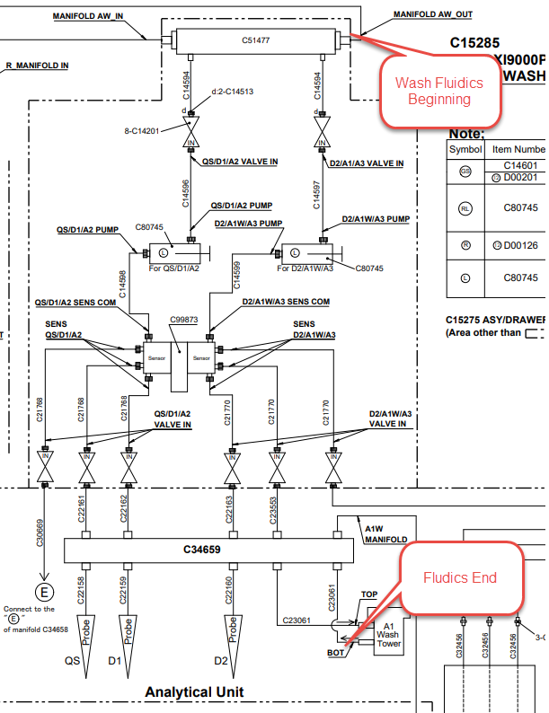
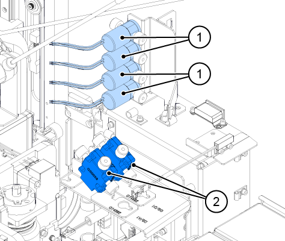
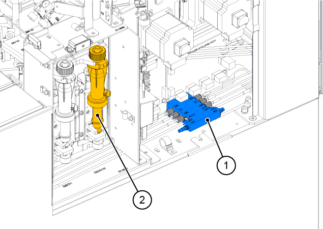
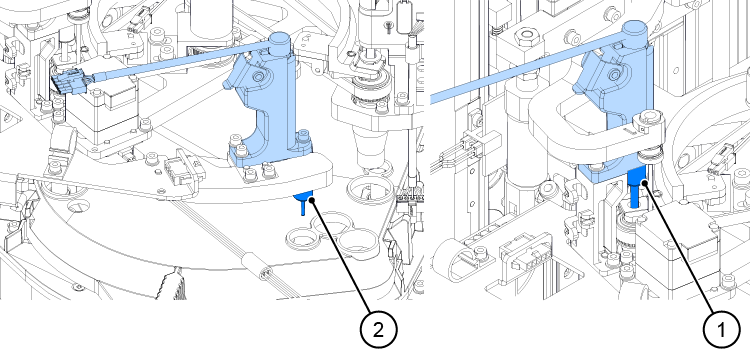
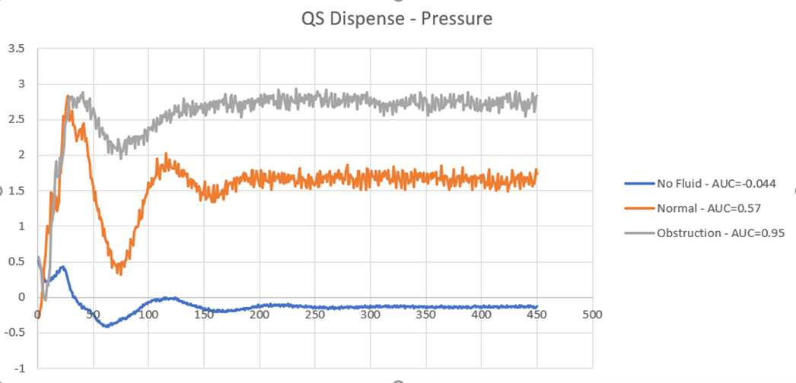

Troubleshooting the WDF Wash Wheel Fluidics Error (Low Pressure) Flag
This topic includes information about how to troubleshoot the WDF flag, which indicates the wash wheel dispense pressure monitoring system detected low fluid or no fluid in QS, D1, D2, or A1 during dispense.
Verify that MOD 12925 Wash Heater Manifold - Replace has been completed on this instrument if applicable.
Select the
SYSTEM RUNNING button and go to
Stop > Pause to enter the instrument into a
YELLOW (Paused) status.
In the Console App go to
Menu > Tools > Diagnostics > Service Diagnostics.
Select
Start Session to enter the instrument into a
BLUE (Maintenance) status.
Open up the upper right cover.
Inspect dispense probes for leaks or wash buffer salt build up. Clean or wipe up the probes as needed.
Inspect heater manifolds for bubbles. If limited bubbles are found at the very top of the heater or no bubbles are found, prime the analyzer 2x and run dispense probe pressure calibration. Refer to
Calibrating the Pressure Sensors for the Wash Wheel procedure.
If bubbles appear in the dispense probe beyond the first heater coil, or if the dispense probe pressure sensor calibration fails, see the following troubleshooting procedures for more information.
Be sure the wash wheel pumps are correctly aligned.
Check to be sure there is wash buffer.
Check to be sure the tubing is connected at both pumps.
Be sure the pressure sensor, DAQC board, and all associated cables are connected and operational.
Troubleshooting the Appearance of Bubbles in the Dispense Probe
Perform this procedure if bubbles appear in the dispense probe beyond the first heater coil.
Put new o-rings in the dispense heaters. Follow MOD 12925 for parts and procedure.
Inspect tubing connections in the fluidics system.
Ensure the tubing flage is flush and has an o-ring at the end.
Ensure the tubing clicks when inserting.
Use diagram below to evaluate the wash fluidics system.
Important: The parts numbers indicated in this diagram may not be current. See the parts manual for current parts numbers.

Inspect dispense probe valve and replace, if necessary.
Inspect the tubing from the dispense probe to the manifold and replace, if necessary.
Figure 474: Dispense Probe Valves and Pressure Sensors

1
Dispense probe valves
2
Pressure sensors
Inspect the wash wheel manifold and replace, if necessary.
Look for salt build up or active leaking.
You can find the manifold by opening the right instrument door under the spin mixer and wash wheel dMCC.
Inspect the dispense syringe and replace, if necessary.
Figure 475: Wash Manifold and Wash Fluidics Syringe

1
Wash manifold
2
Wash fluidics syringe
Inspect the tubing using the fluidics diagram and replace the tubing, if necessary.
Note: Replace any damaged, kinked, or suspect tubing and connections.
Troubleshooting a Dispense Probe Pressure Sensor Calibration Failure
Perform this procedure if the dispense probe pressure sensor calibration fails.
Replace the dispense or QS probe.
Note: To prevent leaks, use the torque tool to tighten the dispense fitting that connects to the probe.
Figure 476: Dispense Probe and QS Probe

1
Dispense probe
2
QS probe
Replace the pressure sensor(s).
Figure 477: Dispense Probe Valves and Pressure Sensors
1
Dispense probe valves
2
Pressure sensors
Analyzing the Related Log Files
Obtain copies of the related Process Monitoring log files from both the
Pass and
Fail folders in
D:\ProgramData\Beckman Coulter\Logs\Falcon Process Monitoring\
In the
Fail folder, use Microsoft Excel to open the newest log file that includes WashWheel in the filename. Take note to be sure the dispense operation is identified in the file.
Plot column C (pressure trace).
Compare cell AB (AUC) with cells AE and AF (threshold limit)
Dispense (obstruction)
AUC < AE
Dispense (no fluid)
AUC > AF
Select the table of pressure data and insert a line chart into the sheet.
Figure 478:

An example of pressure traces. Note the higher magnitude of the obstruction trace compared to the normal trace or the trace for no fluid. The AUC trace for no fluid will be very close to zero (0), while a normal AUC trace for QS dispense will be positive.